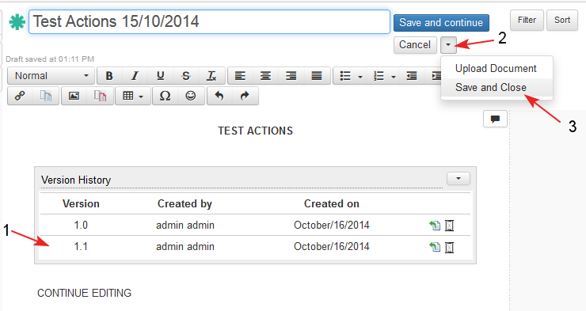
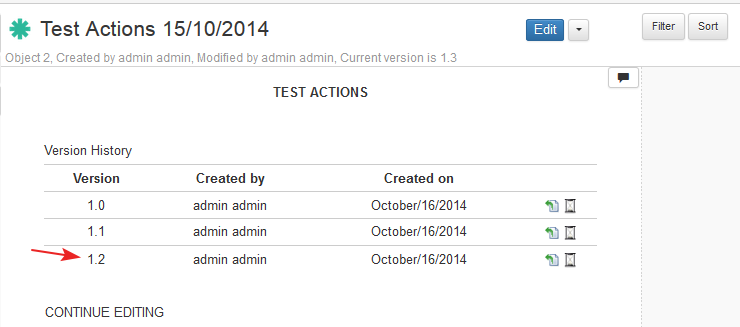

An iDoc may be saved when a new iDoc is created for the first time or after editing an existing iDoc. (see also topics: "Create New iDoc" and "Edit iDoc").
In order not to press button "Edit" every time after the user saves the document two options are implemented:
- Save the iDoc and continue working on it - action "Save and Continue". The "Save and Continue" button is placed on the top of the page.
- Save the iDoc and close the Edit mode - action "Save and Close". "Save and Close" is action put in the actions drop down menu.
Rules:
- When the document is saved for the first time - it is saved with version 1.0
- Every time (after the first save of the document) one of the options "Save and Continue" or "Save and Close" is selected, a new minor version of the document is created (increased by 0.1).
- After "Save and Continue" the changes in the document are saved and the document remains in Edit mode.
- After "Save and Close" the changes in the document are saved and the document goes in Preview mode.
- The user creates a new document. After entering some data (1-2) he/ she decides to save the changes and continue working in edit mode and clicks "Save and continue" (3).

- The system saves the changes, the document is saved for the first time with version 1.0.
- Document properties: "Unique ID", "Created by", "Created on" are set automatically.
- If the user does not change the title form the "Properties" section, the title of the document is set automatically to the name of the template.
- The Version History widget is reloaded with version of document 1.0 (1).
- Document properties: "Unique ID", "Created by", "Created on" are set automatically.
- The user enters new data (2) and clicks "Save and continue" (3).

- The system saves the changes, the document is saved with a new increased minor version 1.1.
- Document properties: "Modified by", "Modified on" are set automatically to the current user and date.
- The Version History widget is reloaded with new increased version of document (1).
- When the document is finally updated the user selects action "Save and Close" from the actions drop down menu (2-3).

- The document is opened in preview mode.
- The version of the document after action "Save and Close" is increased with 0.1.
- The Version History widget is reloaded with new increased version of document .
- Document properties: "Modified by", "Modified on" are updated automatically.
- The version of the document after action "Save and Close" is increased with 0.1.

Planned:
- If the user has made some changes in the document (without saving) and has stopped working in the system for a period of time and his/ her user session has ended, then the changes on the document content are automatically canceled and the document is unlocked.